СП 441.1325800.2019 «Защита зданий от вибрации, создаваемой железнодорожным тран»
О документе: разработчики, утверждение, регистрация, ключевые слова
СВОД ПРАВИЛ
СП 441.1325800.2019
Издание официальное
Москва 2019
1 ИСПОЛНИТЕЛЬ -Федеральное государственное бюджетное учреждение «Научно-исследовательский институт строительной физики Российской академии архитектуры и строительных наук» (НИИСФ РААСН)
- 2 ВНЕСЕН Техническим комитетом по стандартизации ТК 465 «Строительство»
3 ПОДГОТОВЛЕН к утверждению Департаментом градостроительной деятельности и архитектуры Министерства строительства и жилищнокоммунального хозяйства Российской Федерации (Минстрой России)
- 4 УТВЕРЖДЕН приказом Министерства строительства и жилищнокоммунального хозяйства Российской Федерации от 22 января 2019 г. № 23/пр и введен в действие с 23 июля 2019 г.
- 5 ЗАРЕГИСТРИРОВАН Федеральным агентством по техническому регулированию и метрологии (Росстандарт)
В случае пересмотра (замены) или отмены настоящего свода правил соответствующее уведомление будет опубликовано в установленном порядке. Соответствующая информация, уведомление и тексты размещаются также в информационной системе общего пользования - на официальном сайте разработчика (Минстрой России) в сети Интернет
© Минстрой России, 2019
Настоящий нормативный документ не может быть полностью или частично воспроизведен, тиражирован и распространен в качестве официального издания на территории Российской Федерации без разрешения Минстроя России
Дата введения - 2019-07-23
УДК ОКС 91.120.125
Ключевые слова: железнодорожная линия, поезд, верхнее строение пути, вибрация, структурный шум, грунт, здание прогноз, защита, источник вибрации, измерение вибрации, снижение вибрации, проектирование, строительство, эксплуатация, динамическая характеристика, виброизоляция, вибродемпфирующий материал, виброизолятор, ограждающая конструкция, акустический экран
| Руководитель организации-разработчика АО «НИЦ «Строительство» Генеральный директор | А.В. Кузьмин |
|---|---|
| Соисполнитель | |
| Директор Научно исследовательского института строительной Физики Российской академии архитектуры и строительных наук, д.т.н. | И.Л. Шубин |
| Руководитель разработки - директор, д.т.н | И.Л. Шубин |
| Исполнители: | |
| главный научный сотрудник лаборатории 34 д.т.н. | И.Е. Цукерников |
| ведущий научный сотрудник лаборатории 34 д.т.н. | Т.О. Невенчанная |
| ведущий научный сотрудник лаборатории 34 к.т.н. | В.А. Смирнов |
| инженер | |
| лаборатории 34 | А.С. Лебедев |
| инженер | |
| лаборатории 34 | М.Ю. Смоляков |
| Соисполнитель: | |
| Зам. генерального директора ООО «Институт акустических конструкций» к.т.н. | А.Е. Шашурин |
Введение
6 ВВЕДЕН ВПЕРВЫЕ
Настоящий свод правил разработан с учетом требований федеральных законов от 30 марта 1999 г. № 52-ФЗ «О санитарно-эпидемиологическом благополучии населения», от 27 декабря 2002 г. № 184-ФЗ «О техническом регулировании», от 30 декабря 2009 г. № 384-ФЗ «Технический регламент о безопасности зданий и сооружений» и содержит требования к расчету и проектированию защиты от вибрации и структурного шума, создаваемых подвижным составом железнодорожного транспорта в помещениях жилых и общественных зданий, расположенных вблизи железнодорожных линий.
Свод правил разработан авторским коллективом НИИСФ РААСН (д-р техн. наук И.Л. Шубин , д-р техн. наук И.Е. Цукерников , д-р техн. наук Т.О. Невенчанная , канд. техн. наук В.А. Смирнов , А.С. Лебедев , М.Ю. Смоляков ) при участии ООО «Институт акустических конструкций» (канд. техн. наук. А.Е. Шашурин ).
ЗАЩИТА ЗДАНИЙ ОТ ВИБРАЦИИ, СОЗДАВАЕМОЙ ЖЕЛЕЗНОДОРОЖНЫМ ТРАНСПОРТОМ Правила проектирования
Building protection against vibration caused by rail transport. Design rules
1Область применения
Настоящий свод правил распространяется на защиту от вибрации и структурного шума, создаваемых подвижным составом железнодорожного транспорта в помещениях жилых и общественных зданий, расположенных вблизи железнодорожных линий колеи 1520 мм, предназначенных для пропуска пассажирских поездов со скоростью до 250 км/ч включительно и грузовых поездов со скоростью до 140 км/ч включительно с вагонами, имеющими статические и динамические осевые нагрузки, а также температурный диапазон эксплуатации по СП 119.13330.
2Нормативные ссылки
В настоящем своде правил использованы нормативные ссылки на следующие документы:
ГОСТ 11722-78 Резина пористая. Метод определения остаточного сжатия
ГОСТ 12248-2010 Грунты. Методы лабораторного определения характеристик прочности и деформируемости
ГОСТ 17177-94 Материалы и изделия строительные теплоизоляционные. Методы испытаний
ГОСТ 17187-2010 (IEC 61672-1:2002) Шумомеры. Часть 1. Технические требования
ГОСТ 18268-2017 (ISO 1856:2000) Пластмассы ячеистые эластичные. Метод определения относительной остаточной деформации при сжатии
ГОСТ 24346-80 Вибрация. Термины и определения
ГОСТ 25100-2011 Грунты. Классификация
ГОСТ 27242-87 Вибрация. Виброизоляторы. Общие требования к испытаниям
ГОСТ 27751-2014 Надежность строительных конструкций и оснований. Основные положения
ГОСТ 31185-2002 (ИСО 10815:1996) Вибрация. Измерения вибрации внутри железнодорожных туннелей при прохождении поездов
ГОСТ 31191.1-2004 (ИСО 2631-1:1997) Вибрация и удар. Измерение общей вибрации и оценка ее воздействия на человека. Общие требования
ГОСТ 31191.2-2004 (ИСО 2631-2:2003) Вибрация и удар. Измерение общей вибрации и оценка ее воздействия на человека. Часть 2. Вибрация внутри зданий
ГОСТ 31319-2006 (ЕН 14253:2003) Вибрация. Измерение общей вибрации и оценка ее воздействия на человека. Требования к проведению измерений на рабочих местах
ГОСТ 32192-2013 Надежность в железнодорожной технике. Основные понятия. Термины и определения
ГОСТ 34056-2017 Транспорт железнодорожный. Состав подвижной. Термины и определения
ГОСТ 34100.1-2017 Неопределенность измерения. Часть 1. Введение в руководства по выражению неопределенности измерения
ГОСТ 34100.3-2017 Неопределенность измерения. Часть 3. Руководство по выражению неопределенности измерения
ГОСТ ИСО 8041-2006 Вибрация. Воздействие вибрации на человека. Средства измерений
ГОСТ Р 51685-2013 Рельсы железнодорожные. Общие технические условия.
ГОСТ Р 52892-2007 Вибрация и удар. Вибрация зданий. Измерение вибрации и оценка ее воздействия на конструкцию
ГОСТ Р 53963.1-2010 Измерения вибрации сооружений. Требования к средствам измерений
ГОСТ Р 53964-2010 Измерения вибрации сооружений. Руководство по проведению измерений
ГОСТ Р 55050-2012 Железнодорожный подвижной состав. Нормы допустимого воздействия на железнодорожный путь и методы испытаний
ГОСТ Р 55056-2012 Транспорт железнодорожный. Основные понятия. Термины и определения
ГОСТ Р 56353-2015 Грунты. Методы лабораторного определения динамических свойств дисперсных грунтов
ГОСТ Р 56729-2015 (EN 14313:2009) Изделия из пенополиэтилена теплоизоляционные заводского изготовления, применяемые для инженерного оборудования зданий и промышленных установок. Общие технические условия
ГОСТ Р ИСО 2017-1-2011 Вибрация и удар. Упругие системы крепления. Часть 1. Технические данные для применения систем виброизоляции
ГОСТ Р ИСО 2017-2-2011 Вибрация и удар. Упругие системы крепления. Часть 2. Технические данные для применения систем виброизоляции для железнодорожного транспорта
ГОСТ Р ИСО 2017-3-2016 Вибрация и удар. Упругие системы крепления. Часть 3. Технические данные для применения систем виброизоляции при строительстве новых зданий
ГОСТ Р ИСО 2041-2012 Вибрация, удар и контроль технического состояния. Термины и определения
ГОСТ Р ИСО 10137-2016 Основы расчета строительных конструкций. Эксплуатационная надежность зданий в условиях воздействия вибрации
ГОСТ Р ИСО 10846-1-2010 Вибрация. Измерения виброакустических передаточных характеристик упругих элементов конструкций в лабораторных условиях. Часть 1. Общие принципы измерений.
ГОСТ Р ИСО 14837-1-2007 Вибрация. Шум и вибрация, создаваемые движением рельсового транспорта. Часть 1. Общее руководство
ГОСТ Р ИСО 18437-1-2014 Вибрация и удар. Определение динамических механических свойств вязкоупругих материалов. Часть 1. Общие принципы
СП 20.13330.2016 «СНиП 2.01.07-85* Нагрузки и воздействия» (с изменением № 1)
СП 26.13330.2012 «СНиП 2.02.05-87 Фундаменты машин с динамическими нагрузками» (с изменением № 1)
СП 51.13330.2011 «СНиП 23-03-2003 Защита от шума» (с изменением № 1)
СП 119.13330.2017 «СНиП 32-01-95 Железные дороги колеи 1520 мм»
СП 122.13330.2012 «СНиП 32-04-97 Тоннели железнодорожные и автодорожные» (с изменением № 1)
СП 267.1325800.2016 Здания и комплексы высотные. Правила проектирования
СП 271.1325800.2016 Системы шумоглушения воздушного отопления, вентиляции и кондиционирования воздуха. Правила проектирования
СанПиН 2.2.4.3359-16 Санитарно-эпидемиологические требования к физическим факторам на рабочих местах
СН 2.2.4/2.1.8.562-96 Шум на рабочих местах, в помещениях жилых, общественных зданий и на территории жилой застройки
CH 2.2.4/2.1.8.566-96 Производственная вибрация, вибрация в помещениях жилых и общественных зданий
Примечание - При пользовании настоящим сводом правил целесообразно проверить действие ссылочных документов в информационной системе общего пользования - на официальном сайте федерального органа исполнительной власти в сфере стандартизации в сети Интернет или по ежегодному информационному указателю «Национальные стандарты», который опубликован по состоянию на 1 января текущего года, и по выпускам ежемесячного информационного указателя «Национальные стандарты» за текущий год. Если заменен ссылочный документ, на который дана недатированная ссылка, то рекомендуется использовать действующую версию этого документа с учетом всех внесенных в данную версию изменений. Если заменен ссылочный документ, на который дана датированная ссылка, то рекомендуется использовать версию этого документа с указанным выше годом утверждения (принятия). Если после утверждения настоящего свода правил в ссылочный документ, на который дана датированная ссылка, внесено изменение, затрагивающее положение, на которое дана ссылка, то это положение рекомендуется применять без учета данного изменения. Если ссылочный документ отменен без замены, то положение, в котором дана ссылка на него, рекомендуется применять в части, не затрагивающей эту ссылку. Сведения о действии сводов правил целесообразно проверить в Федеральном информационном фонде стандартов.
3Термины и определения
В настоящем своде правил применены термины по СП 51.13330, СП 119.13330, СП 122.13330, ГОСТ Р ИСО 2041, ГОСТ 24346, ГОСТ Р ИСО 14837-1, ГОСТ 34056, ГОСТ Р 52892, ГОСТ Р 55056, СН 2.2.4/2.1.8.566, а также следующие термины с соответствующими определениями:
- 3.1среднеквадратичное значение колеблющейся величины
- Квадратный корень из среднеарифметического или среднеинтегрального значения квадрата колеблющейся величины в рассматриваемом интервале времени. Примечание -Если имеется n дискретных значений колеблющейся величины xi ( i = 1, 2,…, n ), то среднеквадратичное значение 𝑥 ̃ определяется по формуле
- 3.2структурный шум
- Воздушный шум, создаваемый ограждающими конструкциями помещения (стены, потолок, пол), совершающими колебания, вызываемые движением поездов железнодорожных линий.
- 3.3фоновая вибрация
- Вибрация, создаваемая в точке измерения всеми источниками за исключением поездов, проходящих по исследуемому участку железной дороги.
4Общие положения
Настоящий свод правил устанавливает требования, которыми следует руководствоваться при проектировании и реализации защиты от вибрации железнодорожных линий, выполнении расчетов по оценке степени вибрационного и шумового дискомфорта и при разработке мероприятий для обеспечения допустимых параметров вибрации и уровней структурного шума, регламентируемых СН 2.2.4/2.1.8.562, СанПиН 2.2.4.3359 и CH 2.2.4/2.1.8.566.
Физико-механические свойства грунтов приведены в приложении А; требования к проведению натурных измерений вибрации грунта при прохождении поездов -в приложении Б; значения виброскорости, измеренные для опорного расстояния 16 м, - в приложении В; параметры, по которым можно оценивать влияние вибрации на осадки здания - в приложении Г.
Положения настоящего свода правил не учитывают совместного воздействия структурного шума, вызванного движением подвижного состава железной дороги и воздушного шума, передаваемого через наружные ограждающие конструкции.
Категории поездов, принимаемые в расчет в настоящем своде правил, приведены в таблице 4.1.
Таблица 4.1 -Классификация поездов
| Категория поезда | Тип поезда | Максимальная расчетная скорость, км/ч |
|---|---|---|
| 1 | Пассажирский поезд с локомотивной тягой | 200 |
| 2 | Грузовой поезд | 140 |
| 3 | Электропоезд | 160 |
| 4 | Высокоскоростной поезд | 250 |
4.1Нормирование и оценка параметров вибрации и уровней структурного шума в помещениях жилых и общественных зданий
Примечание -В соответствии с ГОСТ Р ИСО 14837-1 вибрация и структурный шум на объекте воздействия наблюдаются в диапазоне частот приблизительно от 1 до 250 Гц. Для некоторых видов грунта (например, скальной породы), а также при наличии жесткой связи между зданием и туннелем, особенно если здание расположено на небольшом расстоянии от туннеля, фундамент здания и скальную породу разделяет только тонкий слой грунта, существенной может оказаться вибрация на более высоких частотах.
4.2Нормирование и критерии оценки вибрации
Примечание -Основания для выбора виброскорости в качестве нормируемого параметра определяются тем, что допустимые значения нормируемых параметров для частотного спектра, свойственного вибрации железнодорожных линий, соответствуют значениям, установленным в СН 2.2.4/2.1.8.566, частотные весовые коэффициенты для большинства подлежащих оценке спектральных полос вибрационного сигнала равны 1, уровень звукового давления структурного шума в помещении определяют по значениям виброскорости колебания ограждающих поверхностей помещения.
Допустимые значения нормируемых параметров 𝑣𝑤,экв,доп , 𝑣 𝑤,макс,доп 𝐿𝑣𝑤,экв,доп , 𝐿 𝑣𝑤,макс,доп в помещениях жилых и общественных зданий следует принимать в соответствии с таблицей 4.2.
Таблица 4.2 -Допустимые значения вибрации в помещениях жилых и общественных зданий
| Время | Допустимое значение по осям X, Y, Z | Допустимое значение по осям X, Y, Z | Допустимое значение по осям X, Y, Z | Допустимое значение по осям X, Y, Z | |
|---|---|---|---|---|---|
| Помещение | суток | 𝑣 𝑤,экв,доп 10 4 , м/с | 𝑣 𝑤,макс,доп 10 4 , м/с, | 𝐿 𝑣 𝑤 ,экв,доп , дБ | 𝐿 𝑣 𝑤 ,макс доп , дБ |
| Жилое (дневное время) | c 7 до 23 ч c 23 до 7 ч | 0,63 0,35 | 2,0 1,1 | 62 57 | 72 67 |
| Палаты больниц и санаториев | c 7 до 23 ч c 23 до 7 ч | 0,44 0,25 | 1,4 0,8 | 59 54 | 69 64 |
| Административно- управленческое | - | 0,90 | 2,8 | 65 | 75 |
| Помещения школ, учебных заведений, читальных залов библиотек | - | 0,63 | 2,0 | 62 | 72 |
Таблица 4.3 Предельно допустимые значения вибрации на рабочих местах общественных зданий
| Предельно допустимое значение по осям | Предельно допустимое значение по осям | Предельно допустимое значение по осям | Предельно допустимое значение по осям |
|---|---|---|---|
| X, Y | X, Y | Z | Z |
| 𝑎 𝑤,8h,доп , м/с 2 | 𝐿 𝑎 𝑤 ,8h,доп , дБ | 𝑎 𝑤,8h,доп , м/с 2 | 𝐿 𝑎 𝑤 ,8h,доп , дБ |
| 0,0099 | 80 | 0,014 | 83 |
где vi и 𝐿𝑣,𝑖 - значения эквивалентной (максимальной) виброскорости, м/с, и ее уровня, дБ, в i -й октавной полосе; 𝑎экв,𝑖 и 𝐿𝑎,экв,𝑖 - значения эквивалентного виброускорения, м/с 2 , и его уровня, дБ, в i -й октавной полосе; 𝑤𝑖 , 𝐿𝑤,𝑖 - значения функции частотной коррекции и ее уровня, дБ, для среднегеометрической частоты i -й октавной полосы.
Значения функций частотной коррекции и их уровней принимают по таблице 4.4.
Таблица 4.4 Функции частотной коррекции
| Значение функции частотной коррекции | Значение функции частотной коррекции | Значение функции частотной коррекции | Значение функции частотной коррекции | Значение функции частотной коррекции | Значение функции частотной коррекции | Значение функции частотной коррекции | Значение функции частотной коррекции | |
|---|---|---|---|---|---|---|---|---|
| f cг , Гц | для виброскорости | Y | по Z | осям | для X, Y ( W d ) | виброускорения | по Z ( W k ) | осям |
| 𝑤 𝑖 | 𝐿 𝑤,𝑖 , дБ | 𝑤 𝑖 | 𝐿 𝑤,𝑖 , дБ | 𝑤 | 𝐿 𝑤,𝑖 , дБ | 𝑤 𝑖 | 𝐿 𝑤,𝑖 , дБ | |
| 4 | 1 | 0 | 0,45 | -7 | 𝑖 0,5120 | -5,82 | 0,9670 | -0,29 |
| 8 | 1 | 0 | 0,9 | -1 | 0,2530 | -11,93 | 1,0360 | 0,31 |
| 16 | 1 | 0 | 1 | 0 | 0,1266 | -17,95 | 0,7743 | -2,22 |
| 31,5 | 1 | 0 | 1 | 0 | 0,0630 | -24,01 | 0,4031 | -7,89 |
| 63 | 1 | 0 | 1 | 0 | 0,0295 | -30,62 | 0,1857 | -14,62 |
Примечание - Для виброскорости значения 𝑤𝑖 и 𝐿𝑤,𝑖 приняты по СН 2.2.4/2.1.8.566 для виброускорения по ГОСТ 31191.1 и ГОСТ ИСО 8041-2006 (приложение В).
4.3Нормирование и критерии оценки структурного шума
Таблица 4.5 Допустимые и предельно допустимые уровни структурного шума
| Место оценки | Время суток | L Аэкв, доп , дБА | L А макс,доп , дБА |
|---|---|---|---|
| Палаты больниц и санаториев, операционные больниц | c 7 до 23 ч c 23 до 7 ч | 35 25 | 50 40 |
| Кабинеты врачей поликлиник, амбулаторий, диспансеров, больниц, санаториев | - | 35 | 50 |
| Классные помещения, учебные кабинеты, учительские комнаты, аудитории учебных заведений, конференц-залы, читальные залы библиотек, зрительные залы клубов, залы судебных заседаний, культовые здания, зрительные залы клубов с обычным оборудованием | - | 40 | 55 |
| Музыкальные классы | - | 35 | 50 |
| Жилые комнаты квартир, жилые помещения домов отдыха, пансионатов, домов-интернатов для престарелых и инвалидов, спальные помещения в детских дошкольных учреждениях и школах- интернатах | c 7 до 23 ч c 23 до 7 ч | 40 30 | 55 45 |
| Жилые комнаты общежитий | c 7 до 23 ч c 23 до 7 ч | 45 35 | 60 50 |
| Номера гостиниц: - гостиницы, имеющие по международной классификации пять и четыре звезды | c 7 до 23 ч c 23 до 7 ч | 35 25 | 50 40 |
| - гостиницы, имеющие по международной классификации три звезды | c 7 до 23 ч c 23 до 7 ч | 40 30 | 55 45 |
|---|---|---|---|
| - гостиницы, имеющие по международной классификации менее трех звезд | c 7 до 23 ч c 23 до 7 ч | 45 35 | 60 50 |
| Помещения офисов, рабочие помещения и кабинеты административных зданий, конструкторских, проектных и научно- исследовательских организаций | - | 50 | 65 |
| Залы кафе, ресторанов, столовых | - | 55 | 70 |
| Фойе театров и концертных залов | - | 45 | - |
| Зрительные залы театров и концертных залов | - | 30 | - |
| Многоцелевые залы | - | 35 | - |
| Кинотеатры с оборудованием «Долби» | - | 30 | 45 |
где 𝐿𝑖 - значение эквивалентного или максимального уровня звукового давления, дБ, в i -й октавной полосе;
- 𝐴𝑖 -значение частотной коррекции А шумомера, дБ, для среднегеометрической частоты i -й октавной полосы, принимаемое для рассматриваемых октавных полос по таблице 4.6 согласно ГОСТ 17187.
Таблица 4.6 Частотная коррекция А шумомера
| f cг , Гц | 16 | 31,5 | 63 | 125 | 250 |
|---|---|---|---|---|---|
| 𝐴 𝑖 , дБ | -56,7 | -39,4 | -26,2 | -16,1 | -8,6 |
5Прогноз вибрации, вызванной движением железнодорожных поездов
5.1Общие положения
- в) оценке воздействия проектируемой железнодорожной линии на здания.
- до 200 м - железная дорога с обращением грузовых поездов;
- до 60 м - железная дорога без обращения грузовых поездов;
Ориентировочное значение ширины зоны (полосы) влияния, считая от оси крайнего (внешнего) пути для железнодорожных тоннелей составляет до 40 м.
- оценочные эквивалентные и максимальные значения виброскорости max v и экв v , м/с, и оценочные эквивалентные значения виброускорения 𝑎8h , м/с 2 , на рабочих местах общественных зданий в октавных полосах со среднегеометрическими частотами 4-250 Гц;
- оценочные эквивалентные и максимальные корректированные значения виброскорости 𝑣𝑤,экв и 𝑣𝑤,макс , м/с и оценочные эквивалентные корректированные значения виброускорения 𝑎𝑤,8h , м/с 2 , на рабочих местах общественных зданий.
Эквивалентные значения виброускорения a , м/с 2 , в октавных полосах частот рассчитывают из эквивалентных значений виброскорости v , м/с, в октавных полосах частот, используя соотношение для гармонической волны:
где f сг - среднегеометрическая частота октавной полосы, Гц.
Определение корректированных значений виброскорости и виброускорения следует выполнять посредством измерений или расчетом по формулам (4.1)-(4.4), принимая функции частотной коррекции для вертикального и горизонтального направлений по таблице 4.4.
В качестве дополнительного параметра вибрации допускается использовать уровни виброскорости Lv и виброускорения La , дБ, определяемые по формуле
где u - перечисленные в 5.1.6 параметры; u 0 - пороговое значение, равное 5 10 -8 м/с для виброскорости и 10 -6 м/с 2 для виброускорения.
где 𝑣𝑤,экв , 𝑣𝑤,макс и 𝐿𝑣𝑤,экв , 𝐿𝑣𝑤,макс - прогнозируемые оценочные величины виброскорости, м/с, и ее уровня, дБ, в рассматриваемом здании; 𝑎𝑤,экв и 𝐿𝑎𝑤,экв - прогнозируемые оценочные величины виброускорения, м/с 2 , и его уровня, дБ, в рассматриваемом здании; 𝑣𝑤,экв,доп , 𝑣𝑤,макс,доп и 𝐿𝑣𝑤,экв ,доп , 𝐿𝑣𝑤,макс ,доп -допустимые величины виброскорости, м/с, и ее уровня, дБ, принимаемые в соответствии с подразделом 4.2; 𝑎𝑤,экв,доп и 𝐿 𝑎𝑤,экв ,доп -допустимые величины виброускорения, м/с 2 , и его уровня, дБ, принимаемые в соответствии с подразделом 4.2.
При проверке условий (5.3) в качестве ожидаемых значений вибрации в оцениваемом здании не допускается принимать значения, рассчитанные на поверхности грунта в месте расположения фундамента проектируемого здания.
Выбор средств защиты от вибрации проводится с учетом их эффективности и экономической целесообразности.
1) при оценке воздействия вибрации, создаваемой железнодорожным транспортом, на здания и сооружения, располагаемые в зоне влияния путей на этапе предпроектной проработки следует пользоваться подразделом 5.2.
В этом случае определяют уровни вибрации в помещениях зданий и сооружений и проводят их оценку на соответствие разделу 4;
2) в случае наличия незначительных (до 1 дБ в низкочастотной области (ниже октавной полосы со среднегеометрической частотой 31,5 Гц) нормируемого диапазона), существенных (свыше 20 дБ в октавной полосе со среднегеометрической частотой 16 Гц) превышений уровней вибрации, полученных по результатам расчета по методике подраздела 5.2, а также для более детального проектирования систем виброизоляции пути или здания следует руководствоваться подразделом 5.3.
К динамическим параметрам грунтов относят: а) динамический модуль упругости на частоте 10 и 30 Гц, Edyn 10 ( Edyn 30 ), Н/мм² ;
- б) динамический модуль сдвига на частоте 10 и 30 Гц, Gdyn 10 ( Gdyn 30 ), Н/мм² ;
- в) коэффициент потерь η;
- г) коэффициент Пуассона ϑ;
- д) скорость распространения продольных волн ct , м/с;
- е) скорость распространения поперечных волн c l , м/с.
В рамках технического задания может быть внесено требование о предоставлении графика деградации модуля сдвига и коэффициента демпфирования.
Испытания для определения параметров а)-г) следует вести параллельно на приборе трехосного сжатия (диаметр образцов не менее 70 мм) и резонансной колонке (диаметр образцов не менее 50 мм) по ГОСТ Р 56353. Используемое оборудование должно иметь свидетельства об утверждении типа средств измерений, утвержденное в установленном порядке, а также свидетельство о поверке. У организации, выполняющей испытания для определения динамических параметров, должна быть лицензия на осуществление деятельности, составляющей предмет технического задания, а также аттестат аккредитации грунтовой лаборатории с областью аккредитации, включающей ГОСТ Р 56353.
Ориентировочные значения параметров различных типов грунтов приведены в приложении А.
Влияние вибрации на осадки здания допускается оценивать с учетом таблицы Г.1 приложения Г.
5.2Расчет на стадии предпроектной проработки
5.2.1 Общие положения
- 5.2.1.1 Прогнозирование значений виброскорости в зданиях и сооружениях и подбор виброзащитных мероприятий проводится в следующей последовательности:
- а) оценивают значения вибрации верхнего строения пути железной дороги, при наличии соответствующих экспериментальных данных, или поверхности грунта на расстоянии 8 м от оси железной дороги в соответствии с 5.2.2, с учетом текущего состояния железнодорожного пути (оценка текущего состояния приведена в [2]) и скорости обращения подвижного состава в соответствии с 5.2.2.4 и 5.2.2.5;
- б) задают или определяют исходное для расчета геологическое строение верхней части грунта основания земляного полотна: число и толщины слагающих слоев верхней части грунта общей толщиной 10 + h H м, где h - удвоенная ширина балластной призмы [6];
- в) определяют массовые, динамические упругие и диссипативные параметры слагающих грунтов: плотность, скорости продольных и поперечных волн и коэффициент потерь в каждом слое по 5.1.10;
- г) определяют ожидаемые значения виброскорости на поверхности грунта в соответствии с 5.2.3;
- д) определяют ожидаемые значения виброскорости поверхности фундамента здания в соответствии с 5.2.4;
- e) определяют ожидаемые значения виброскорости несущих элементов здания (перекрытий и стен) в соответствии с 5.2.5;
- ж) выполняют проверку условий (подраздел 5.3);
- з) в случае нарушения условий (подраздел 5.3) осуществляют подбор и проектирование виброзащитных мероприятий в соответствии с разделом 7 или 8;
- и) оценивают эффективность спроектированных виброзащитных мероприятий, повторно выполняя расчет по перечислениям г)-ж) настоящего пункта и проверку соответствия 5.1.7.
- 5.2.1.2 Вычисление виброскорости v , м/с, несущих и (или) ограждающих конструкций зданий и сооружений следует проводить по формуле
где vи(р ) - измеренный (рассчитанный) октавный спектр вертикальной и горизонтальных составляющих скорости колебаний поверхности грунта на абрисе фундамента здания или сооружения, м/с;
- ktrains -поправочный коэффициент, учитывающий возможность одновременного движения по параллельным путям на рассматриваемом участке, определяют по 5.2.2.3;
- kspeed - поправочный коэффициент, учитывающий скорость движения подвижного состава, определяют по таблице 5.2;
- krail - поправочный коэффициент, учитывающий износ пути, колесных пар, наличие стрелочных переводов, переездов и прочих особых элементов пути, приводящих к существенному изменению динамической нагрузки на верхнее строение пути, определяют по таблице 5.1;
- kedge -частотно-зависимая функция, учитывающая наличие систем виброизоляции (в конструкции верхнего строения пути или здания). В случае ее отсутствия принимается равной единице в заданном частотном диапазоне; kfund - частотно-зависимая функция, характеризующая передачу вибрации с грунта на фундамент здания, определяют по 5.2.4,
- krez - частотно-зависимая функция, соответствующая резонансному увеличению колебаний ограждающими поверхностями помещений, определяют по 5.2.5;
- kh - частотно-зависимая функция, учитывающая изменение колебаний по высоте здания, определяют по 5.2.4.6.
Указанные коэффициенты и частотно-зависимые функции допускается определять, как путем расчета, так и на основании статистических данных натурных измерений. При применении результатов натурных измерений следует учитывать положения 5.2.2.2.
Формула (5.4) справедлива при вычислении нормируемых разделом 4 параметров как для вертикальной, так и для горизонтальной составляющих колебаний с учетом замены соответствующих частотно-зависимых функций в зависимости от направления воздействия.
- 5.2.1.3 В случае, если измерения вибрации проводятся в точках на абрисе фундамента для всех категорий поездов, обращающихся по выбранной железнодорожной линии с установленными скоростями, коэффициенты ktrains , kspeed и krail принимают равными единице.
- 5.2.1.4 При движении поездов в тоннелях расчет допускается выполнять по методике [6], установленной при наличии исходной информации: скорости колебаний лотка и обделки тоннеля для категорий поездов, двигающихся по данной линии. Исходные данные определяются на основе прямых измерений на объекте-аналоге по ГОСТ 31185 с учетом 5.2.2.2.
5.2.2 Определение параметров исходного динамического воздействия
- 5.2.2.1 Определение параметров исходного динамического воздействия проводится в соответствии с приложением Б для каждой категории поездов (таблица 4.1), двигающихся по исследуемому участку линии железной дороги. При этом должен быть получен спектр исходного динамического воздействия в октавных полосах со среднегеометрическими частотами 4250 Гц, выделяющихся над уровнем фона (при условии превышения значений параметров вибрации в указанных полосах в месте их задания над соответствующими параметрами фоновой вибрации более чем в два раза (на 6 дБ)).
5.2.2.2 На стадии разработки технико-экономического обоснования (ТЭО) или предпроектных проработок величины исходного динамического воздействия (виброскорость верхнего строения пути, поверхности грунта на расстоянии от оси пути) допускается оценивать на основе результатов натурных измерений, проведенных на эксплуатируемых участках линий железной дороги (объект-аналог), имеющих аналогичную конструкцию верхнего строения пути, аналогичный парк подвижного состава, двигающегося на схожих с исследуемым участком скоростях, а также находящегося в аналогичных, как и проектируемый участок, инженерногеологических условиях. При этом различие (между объектом-аналогом и исследуемым участком) свойств грунта, скорости движения поездов и осевой нагрузки не должно превышать 15 %.
5.2.2.3 При наличии двух и более путей напротив исследуемого (проектируемого) здания следует учитывать повышение вибрации в здании при движении поездов (таблица 4.1) одновременно по нескольким путям (при наличии такой технической возможности, иное должно быть обосновано) путем введения поправочного коэффициента к скорости колебаний v и(р), входящей в формулу (5.4), вычисляемого по формуле
где r расстояние от середины ближнего пути до расчетной точки, м; ri - расстояние между серединами ближнего и iго пути, м; n -показатель степени, определяемый по таблице 5.3; m - число путей, по которым возможно одновременное движение поездов.
5.2.2.4 Методика расчета применяется для существующих конструкций пути с малым износом, при его эксплуатации в соответствии с [1].
В случае износа пути или колесных пар подвижного состава, а также при расположении здания в зоне влияния особых конструкций пути (стрелочный перевод, стрелочная улица, переезд, безбалластная конструкция верхнего строения пути (ВСП)), необходимо применять поправочный коэффициент krail к оценочным значениям вибрации, приведенный в таблице 5.1.
Таблица 5.1 Влияние конструкции пути
| Наименование дефекта | Поправочный коэффициент k rail , дБ (раз) |
|---|---|
| Износ или неровности на колесной паре 1) | +10 дБ (3,162) |
| Изношенный рельс, волнообразный износ рельса 2) | +10 дБ (3,162) |
| Переезд, стрелочный перевод, перекрестный съезд 3) | +10 дБ (3,162) |
| Изолирующий, изношенный, компенсирующий стык 4) | +8 дБ (2,511) |
| Безбалластная конструкция пути | -3 дБ (0,708) |
- 2) Если и колесная пара, и рельс изношены, применяется один поправочный коэффициент. Волнообразный износ рельса - типичная проблема, особенно в кривых и при значительной нагрузке на ось. Снижение этого фактора возможно с помощью шлифовки рельса.
- 3) Воздействие колесной пары на стрелочном переводе в зоне крестовины существенно повышает уровни вибрации ВСП. Снижение этого фактора возможно за счет установки особых конструкций крестовин.
- 4) Существенное повышение уровней вибрации на стыке связано с импульсным динамическим воздействием (ударом колеса об рельс). Снижение этого фактора возможно за счет применения бесстыкового пути. 4. 5.2.2.5 Поправку на скорость подвижного состава kspeed , дБ (раз), принимают в соответствии с таблицей 5.2.
Таблица 5.2 Влияние скорости движения подвижного состава
| Проектная скорость движения по участку, км/ч | k speed , дБ (раз), при опорной скорости, км/ч | k speed , дБ (раз), при опорной скорости, км/ч | k speed , дБ (раз), при опорной скорости, км/ч |
|---|---|---|---|
| Проектная скорость движения по участку, км/ч | 50 | 80 | 240 |
| 480 | - | - | +6,0 дБ (1,995) |
| 320 | - | - | +2,5 дБ (1,333) |
| 240 | - | - | 0,0 дБ (1,000) |
| 160 | - | - | -3,5 дБ (0,668) |
| 120 | - | - | -6,0 дБ (0,501) |
| 100 | +6,0 дБ (1,995) | +1,6 дБ (1,202) | - |
| 80 | +4,4 дБ (1,659) | 0,0 дБ (1,000) | - |
| 60 | +2,5 дБ (1,333) | -1,9 дБ (0,804) | - |
| 50 | 0,0 дБ (1,000) | -4,4 дБ (0,603) | - |
| 30 | -3,5 дБ (0,668) | -8,0 дБ (0,398) | - |
Примечание -В общем случае уровень вибрации, дБ, пропорционален 20lg(𝑣 /𝑣𝑟𝑒𝑣 ) , где v - проектная скорость движения поезда, vref - расчетное значение опорной скорости.
5.2.2.6 Коэффициенты kspeed и krail , определяемые по 5.2.2.4 и 5.2.2.5, применяют в формуле (5.4) в октавных полосах, в которых уровень вибрации при движении поездов железной дороги выделяется над уровнем фоновой вибрации.
5.2.3 Определение ожидаемых значений вибрации поверхности грунта на расстоянии от линии
- 5.2.3.1 В случае отсутствия достаточного количества экспериментальных данных или выполнения оценки по 5.1.2 б) и (или) 5.1.3 б), 5.1.3 в), допускается виброскорость колебаний грунта v , м/с, в точке на расстоянии r , м, от источника колебаний определять по известной виброскорости v 0, м/с, колебаний грунта на расстоянии r 0, м, от оси ближнего железнодорожного пути произведением ее на коэффициент геометрического ослабления С и коэффициент демпфирования материала D по формуле
При ориентировочных расчетах можно использовать значения v ( r 0 ), приведенные в таблице В.1 приложения В для опорного расстояния r 0 = 16 м.
Параметры C и D , входящие в формулу (5.6), оценивают по следующим зависимостям по ГОСТ Р ИСО 10137-2016 (приложение В):
где n - показатель степени, выбираемый в зависимости от типа механизма распространения волн по таблице 5.3; f сг - среднегеометрическая частота октавной полосы, Гц; ρ = η/ c - параметр, определяемый по таблице 5.4 или вычисляемый исходя из результатов динамических испытаний грунта по 5.1.10;
- η - коэффициент потерь грунта, η = δ/π, где δ - логарифмический декремент колебаний;
- с - скорость продольной волны, м/с.
- 5.2.3.2 Значения коэффициента потерь грунта, а также параметры формул (5.6)-(5.8) рекомендуется верифицировать с данными натурных измерений на конкретной площадке застройки (допускается проводить в рамках более детальной проработки проекта по подразделу 5.3).
Таблица 5.3 Значения n в зависимости от расположения источника и точки наблюдения
| Положение источника | Положение точки наблюдения | n |
|---|---|---|
| На поверхности | На поверхности | 0,25 |
| На поверхности | В толще грунта | 1,0 |
| В толще грунта | На поверхности | 0,5 |
| В толще грунта | В толще грунта | 0,5 |
Таблица 5.4 Значения ρ в зависимости от типа грунта
| Тип грунта | Описание | , с/м |
|---|---|---|
| 1 | Дисперсные несвязные, в т. ч. техногенные грунты: - лессовые - топкие - речной песок - дюнный песок - органические - поверхностный слой грунта | 4 4 2 10 6 10 - - |
| 2 | Дисперсные несвязные и связные осадочные и элювиальные грунты: - пески - супеси, суглинки - пылеватые глины - гравий, щебень - пылеватые пески, ил | 5 4 6 10 2 10 - - |
|---|---|---|
| 3 | Дисперсные и скальные грунты: - плотный песчаник - сухая уплотненная глина - уплотненная валунная морена, ледниковые тиллиты | 6 5 6 10 6 10 - - |
| 4 | Скальные грунты: - горная порода, материковый грунт - скальная порода | 6 6 10 - |
| Примечание - Классификация грунтов приведена в соответствии с ГОСТ 25100. | Примечание - Классификация грунтов приведена в соответствии с ГОСТ 25100. | Примечание - Классификация грунтов приведена в соответствии с ГОСТ 25100. |
5.2.4 Определение уровней вибрации фундамента здания
5.2.4.1 Для зданий с ленточными или плитными фундаментами определяют его частоты свободных колебаний f bs , Гц, как жестких конструкций на упругом основании расчетом по апробированной методике в сертифицированном программном комплексе или по формуле
где ks - жесткость грунта основания, Н/м; mb - масса здания, кг.
При определении массы здания mb , кг, учитывается действие постоянных и временных нагрузок в соответствии с СП 20.13330 для их нормативных значений. Жесткость грунта основания под зданием рассчитывается на основании СП 26.13330 и данных физико-механических испытаний грунтов.
Для зданий, расположенных на свайном основании, расчет следует проводить в соответствии с подразделом 5.3.
5.2.4.2 Для частот внешнего воздействия, превышающих f bs , амплитуды колебаний фундамента здания оказываются ниже амплитуд колебаний грунта. При совпадении частоты внешнего воздействия и собственной частоты сооружения, передаточная функция может быть определена по формуле
где η - коэффициент потерь грунта, определяемый по 5.1.10.
5.2.4.3 Передаточная функция для фундамента как массивного тела на упругом основании определяется по формуле
где bs f z f = - коэффициент расстройки; η - коэффициент потерь грунта, определяемый по 5.1.10.
- 5.2.4.4 Скорость колебаний фундамента здания определяется в каждой октавной полосе по формуле
где vi (f) - виброскорость колебаний грунта в исследуемой точке вблизи фундамента в iй октавной полосе частот, м/с, определяемая по формуле (5.6) или по данным натурных измерений в соответствии с приложением Б; kfund,i - значение передаточной функции для iй октавной полосы частот, определяемое по формулам (5.10), (5.11).
- 5.2.4.5 Если определить упруго-дисипативные характеристики грунта основания не представляется возможным, а также для проверки адекватности вычисления передаточной функции для фундаментов сложных типов, допускается принимать передаточную функцию kfund для перехода с грунта на фундамент здания по кривым рисунка 5.2.
Рисунок 5.2 - Передаточная функция kfund
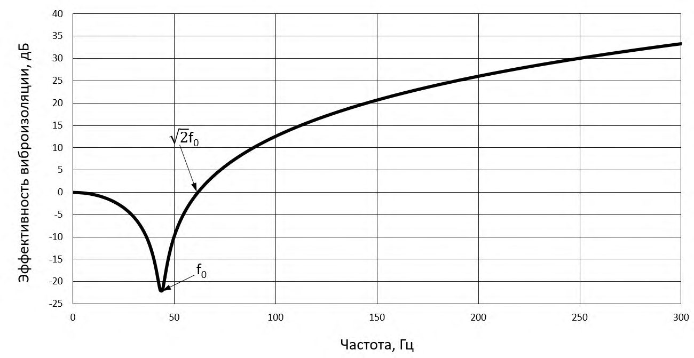
Кривая 2 на рисунке 5.2 может быть использована для вычисления передаточных функций для зданий малого объема и нормальных грунтовых условий (скорость распространения продольных волн около 200 м/с). Если грунт мягче или жестче (скорость распространения продольных волн отличается в среднем более чем в два раза), следует пользоваться кривой 3 или 1, соответственно. Если исследуется высотное здание, следует пользоваться кривой 3.
- 5.2.4.6 В рамках применения оценочной методики прогнозирование, распространение колебаний по зданию допускается не учитывать «в запас» расчетной модели, принимая передаточную функцию kh = 1.
- 5.2.4.7 При расположении высотных зданий (СП 267.1325800) вблизи линий железной дороги или при расположении здания на слабых грунтах, рекомендуется дополнительно учитывать возможный резонанс конструкции здания в горизонтальном направлении.
- 5.2.4.8 Для высотных зданий (СП 267.1325800) с постоянной высотой этажа или протяженных с постоянным шагом несущих конструкций, необходимо также проводить исследования параметрического резонанса при совпадении частоты внешнего воздействия с периодической структурой здания.
5.2.5 Определение уровней вибрации стен и перекрытий в расчетном помещении здания
- 5.2.5.1 Расчет значений резонансного увеличения амплитуд колебаний конструкций производится для изгибаемых элементов зданий и сооружений.
Используя проектную документацию на исследуемое здание, выделяют группы элементов сопоставимых геометрических размеров в плане, наиболее часто встречающихся в исследуемом здании или сооружении, с учетом их назначения.
Определяют их расчетную схему с учетом условий закрепления в несущих конструкциях.
- 5.2.5.2 Для выбранных типовых групп изгибаемых элементов определяют их резонансные частоты и передаточные функции krez в октавных полосах частот, попадающих в диапазон частот, выделяющихся над уровнем фоновой вибрации.
Расчетная схема для перекрытий зданий должна учитывать наличие (влияние) внутренних перегородок, а также изменение поперечного сечения изгибаемого элемента.
Расчет рекомендуется проводить в рамках численного моделирования в программных комплексах, построенных по методу конечного элемента (МКЭ). Для простых перекрытий в плане (квадратные, круглые, прямоугольные) допускается использовать расчетные формулы строительной механики и теории упругости.
- 5.2.5.3 Основываясь на полученном значении резонансной частоты ограждающей конструкции, ее передаточную функцию определяют по графикам рисунка 5.3, а , б для бетонных и деревянных конструкций, соответственно. а
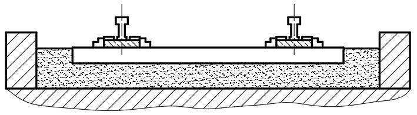
б
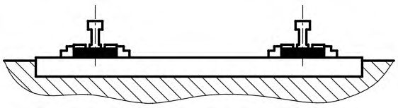
Рисунок 5.3 - Частотно-зависимые функции krez для бетонных ( а ) и деревянных ( б ) конструкций
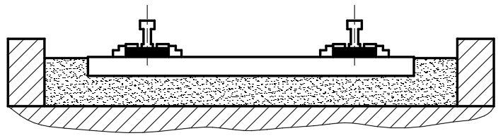
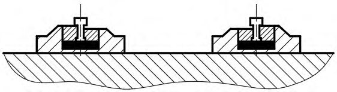
5.3Расчет на стадии разработки проекта
5.3.1 Общие положения
5.3.1.1 При детальном прогнозировании уровней вибрации в помещениях зданий, расположенных вблизи железнодорожных линий, следует разрабатывать детальные расчетные математические модели, например, используя метод конечных элементов (МКЭ), метод граничных элементов (МГЭ) или другие апробированные методы строительной механики. Допускается совмещение указанных методов в рамках единой расчетной модели.
При разработке модели необходимо опираться на основные характеристики источника вибрации, пути ее распространения и объекта воздействия по ГОСТ Р ИСО 14837-1-2007 (приложение А).
- 5.3.1.2 Прогноз допускается выполнять по формуле (5.4), в которой необходимые передаточные функции kedge , kfund , krez , kh определяют на основании расчета по модели 5.3.1.1.
5.3.2 Общие требования к расчетной модели
5.3.2.1 Расчетная модель должна удовлетворять ГОСТ Р ИСО 14837-12007 (8.2.2.3, 8.2.2.4) и учитывать физические особенности взаимодействия подвижного состава с ВСП, распространения и видоизменения колебательной энергии при распространении волнового фронта от ВСП по грунту до здания, перехода в здание и распространения по зданию в соответствии с ГОСТ Р ИСО 14837-1-2007 (приложение А).
- 5.3.2.2 Характеристики материалов расчетной модели должны учитывать воздействие длительного нагружения и их старение на расчетный срок службы сооружения. Расчетный срок службы сооружения должен определять генеральный проектировщик по согласованию с заказчиком. Рекомендуемые сроки службы зданий и сооружений приведены в таблице 1 ГОСТ 27751-2014.
5.3.2.3 Расчеты по численным моделям МКЭ и МГЭ допускается проводить при использовании гармонического сигнала на каждой среднегеометрической частоте исследуемого диапазона третьоктавных полос. Представление результатов в октавной полосе частот нормируемого диапазона осуществляется с помощью энергетического суммирования.
5.3.3 Верификация расчетной модели
- 5.3.3.1 Перед применением в целях прогноза, расчетная модель должна быть верифицирована с результатами натурных испытаний, т. е. должна быть построена модель пути и здания с учетом 5.3.3.2.
- 5.3.3.2 Для целей верификации должен быть выбран участок линии железной дороги, для которого известны:
- а) конструкция верхнего строения пути (продольный, поперечный профили);
- б) скорость и тип подвижного состава категорий, указанных в таблице 4.1;
- в) результаты инженерно-геологических изысканий с динамическими характеристиками грунтов по 5.1.10;
- г) геоподоснова с указанием оси железнодорожной линии и посадкой здания, конструктивные и архитектурные чертежи здания;
- д) результаты измерений вибрации ВСП, грунта вблизи фундамента, на фундаменте и в помещениях здания, выполненных в соответствии с приложением Б.
- 5.3.3.3 Расчетная модель должна учитывать 5.3.3.2. По результатам расчетов должно быть показано соответствие результатов вычислений и результатов натурных измерений для:
- 1) определения соответствия затухания колебаний в грунте с удалением от оси трассы;
- 2) определения затухания (видоизменения) спектра колебаний при переходе с грунта на фундамент сооружения;
- 3) определения видоизменения колебаний при распространении по конструкциям здания. 4. 5.3.3.4 Расчетная модель считается верифицированной в случае если расхождение между результатами расчета и результатами натурных измерений не превышает 15 %. В противном случае расчетную модель для целей прогноза использовать нельзя и требуется ее переработка.
Результаты верификации следует оформлять отдельным отчетом и прикладывать к результатам прогноза.
6Расчет уровней структурного шума
6.1Общие положения
6.2Определение уровней структурного шума
где s - коэффициент излучения ограждения;
F - площадь ограждения, м² ;
- B -акустическая постоянная рассматриваемого помещения, определяемая по СП 271.1325800.
Для ограждений оценивают колебания по направлениям, перпендикулярным плоскости ограждения, т. е. для стен - в горизонтальных направлениях X и Y , для пола и потолка - в вертикальном направлении Z .
Средний уровень виброскорости излучающей конструкции вычисляют, исходя из уровня вибраций центра ограждения, путем введения поправки минус 7,8 дБ для первой резонансной частоты в предположении, что закон распределения динамических прогибов по площади ограждения имеет синусоидальный характер и во всем анализируемом диапазоне частот рассматривается исключительно резонансный режим колебаний ограждений.
где П и F - периметр, м, и площадь, м² , пластины; c 0 - скорость звука в воздухе, м/с; f кр - критическая частота, Гц.
где с п - скорость продольной волны в материале пластины, м/с; d - толщина пластины, м.
7Виброизоляция верхнего строения пути
7.1Общие положения
- а) оценивают значения вибрации в помещениях здания, а также на его фундаменте (или этажах) в соответствии с разделом 5; б) проверяют условия (5.3). В случае их невыполнения, сопоставляют эквивалентные и/или максимальные значения виброскорости (эквивалентные значения виброускорения) в октавных полосах частот с f сг = 4-63 Гц с выделяющимися над фоном значениями виброскорости с предельными значениями виброскорости (виброускорения), равными нормативным значениям по СН 2.2.4/2.1.566-96 (таблицы 8-10), соответствующим допустимым эквивалентным и максимальным корректированным значениям виброскорости таблицы 4.2 (предельно допустимым эквивалентным корректированным значениям виброускорения таблицы 4.3) и вычисляют превышения в октавных полосах нормируемого диапазона; в) подбирают виброзащитные мероприятия с учетом прогнозируемых превышений в октавных полосах нормируемого диапазона в соответствии с разделом 7 или 8.
Указанные характеристики виброзащитной конструкции верхнего строения пути должны быть обоснованы расчетом в соответствующих разделах проектной документации.
7.2Требования к материалам
где U - модуль упругости пути, МПа;
Ж - жесткость подрельсового основания, кН/мм; l -расстояние между осями соседних шпал, м, принимаемое в зависимости от числа шпал на 1 км пути по СП 119.13330.
где Ж i - жесткость отдельных элементов конструкции пути, кН/мм, при заданном удельном давлении на них.
Таблица 7.1 Модуль упругости пути при эпюре подрельсовых опор 2000 шт./км
| Ж доп. , кН/мм | Модуль упругости пути, МПа, при жесткости узла рельсового скрепления,Ж скр , кН/мм | Модуль упругости пути, МПа, при жесткости узла рельсового скрепления,Ж скр , кН/мм | Модуль упругости пути, МПа, при жесткости узла рельсового скрепления,Ж скр , кН/мм | Модуль упругости пути, МПа, при жесткости узла рельсового скрепления,Ж скр , кН/мм | Модуль упругости пути, МПа, при жесткости узла рельсового скрепления,Ж скр , кН/мм | Модуль упругости пути, МПа, при жесткости узла рельсового скрепления,Ж скр , кН/мм | Модуль упругости пути, МПа, при жесткости узла рельсового скрепления,Ж скр , кН/мм | Модуль упругости пути, МПа, при жесткости узла рельсового скрепления,Ж скр , кН/мм |
|---|---|---|---|---|---|---|---|---|
| 50 | 60 | 70 | 80 | 90 | 100 | 125 | 150 | |
| 100 | 66,7 | 75,0 | 82,4 | 88,9 | 94,7 | 100,0 | 111,1 | 120,0 |
| 90 | 64,3 | 72,0 | 78,8 | 84,7 | 90,0 | 94,7 | 104,7 | 112,5 |
| 80 | 61,5 | 68,6 | 74,7 | 80,0 | 84,7 | 88,9 | 97,6 | 104,3 |
| 70 | 58,3 | 64,6 | 70,0 | 74,7 | 78,8 | 82,4 | 89,7 | 95,5 |
|---|---|---|---|---|---|---|---|---|
| 60 | 54,5 | 60,0 | 64,6 | 68,6 | 72,0 | 75,0 | 81,1 | 85,7 |
| 50 | 50,0 | 54,5 | 58,3 | 61,5 | 64,3 | 66,7 | 71,4 | 75,0 |
| 40 | 44,4 | 48,0 | 50,9 | 53,3 | 55,4 | 57,1 | 60,6 | 63,2 |
| 30 | 37,5 | 40,0 | 42,0 | 43,6 | 45,0 | 46,2 | 48,4 | 50,0 |
| 20 | 28,6 | 30,0 | 31,1 | 32,0 | 32,7 | 33,3 | 34,5 | 35,3 |
Таблица 7.2 Модуль упругости пути при эпюре подрельсовых опор 1840 шт./км
| Ж доп. , кН/мм | Модуль упругости пути, МПа, при жесткости узла рельсового скрепления,Ж скр , кН/мм | Модуль упругости пути, МПа, при жесткости узла рельсового скрепления,Ж скр , кН/мм | Модуль упругости пути, МПа, при жесткости узла рельсового скрепления,Ж скр , кН/мм | Модуль упругости пути, МПа, при жесткости узла рельсового скрепления,Ж скр , кН/мм | Модуль упругости пути, МПа, при жесткости узла рельсового скрепления,Ж скр , кН/мм | Модуль упругости пути, МПа, при жесткости узла рельсового скрепления,Ж скр , кН/мм | Модуль упругости пути, МПа, при жесткости узла рельсового скрепления,Ж скр , кН/мм | Модуль упругости пути, МПа, при жесткости узла рельсового скрепления,Ж скр , кН/мм |
|---|---|---|---|---|---|---|---|---|
| 50 | 60 | 70 | 80 | 90 | 100 | 125 | 150 | |
| 100 | 61,3 | 69,1 | 75,8 | 81,8 | 87,2 | 92,1 | 102,3 | 110,5 |
| 90 | 59,1 | 66,3 | 72,5 | 78,0 | 82,9 | 87,2 | 96,4 | 103,6 |
| 80 | 56,6 | 63,1 | 68,8 | 73,7 | 78,0 | 81,8 | 89,8 | 96,1 |
| 70 | 53,7 | 59,5 | 64,5 | 68,8 | 72,5 | 75,8 | 82,6 | 87,9 |
| 60 | 50,2 | 55,2 | 59,5 | 63,1 | 66,3 | 69,1 | 74,7 | 78,9 |
| 50 | 46,0 | 50,2 | 53,7 | 56,7 | 59,2 | 61,4 | 65,8 | 69,1 |
| 40 | 40,9 | 44,2 | 46,9 | 49,1 | 51,0 | 52,6 | 55,8 | 58,2 |
| 30 | 34,5 | 36,8 | 38,7 | 40,2 | 41,4 | 42,5 | 44,6 | 46,0 |
| 20 | 26,3 | 27,6 | 28,6 | 29,5 | 30,1 | 30,7 | 31,8 | 32,5 |
Примечание - При пользовании таблицами 7.1 и 7.2 для соответствующего значения жесткости узла рельсового скрепления Жскр, находим значение требуемого модуля упругости пути. Значение в левой графе таблиц показывает требуемую дополнительную жесткость Ждоп. упругого слоя (подшпальной прокладки, подбалластного мата, системы «масса-пружина» и т. д.). В случае, если требуемое значение находится между приведенными в настоящих таблицах, применяют линейную интерполяцию.
где Ж - жесткость (динамическая) подрельсового основания, кН/мм; munsp -колеблющаяся масса, кг, представляющая собой сумму необрессоренных масс тележки подвижного состава, а также конструкции ВСП (рельса, промежуточного скрепления, шпалы или полушпалка, бетона путевой плиты, балласта и т. д.), приходящуюся на одну подрельсовую опору.
Рисунок 7.1 - Эффективность одномассовой виброзащитной системы
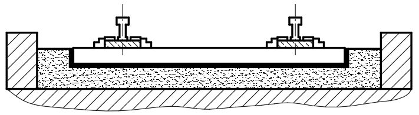
Примечание - Комбинация технических решений, используемых для снижения передаваемой вибрации (переизлучаемого структурного шума) в разных типовых конструкциях пути, не позволяет, как правило, повысить эффективность виброзащитной конструкции пути из-за возможного внутреннего резонанса системы виброизоляции. а - типовая балластная конструкция пути; б - балласт с упругими подрельсовыми прокладками/сплошное опирание рельса; в балласт с упругой подшпальной прокладкой; г балласт на упругом подбалластном мате; д плавающее балластное корыто; е типовая безбалластная конструкция пути; ж заглубленный рельс в упругой оболочке на бетонном основании; и - упругие подрельсовые прокладки на бетонном основании; к упругие прокладки под рельсовое скрепление на бетонном основании; л блоки/шпалы в упругом чехле; м плавающая плита с непрерывным опиранием на бетон (система «масса-пружина»); н плавающая плита с точечным опиранием на бетон (система «масса-пружина»).
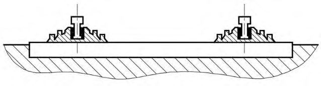
Рисунок 7.2 - Виброзащитные конструкции верхнего строения пути
- a) безопасность, учитывающая, в том числе:
- механические напряжения в рельсе,
- действующие силы в болтовых соединениях и противоугонах,
- статические и динамические прогибы рельса,
- пространственную скорость изменения статических и динамических прогибов по длине рельса,
- усталостные напряжения в элементах пути; 7. б) капитальные издержки, учитывающие, в том числе:
- сложность конструкции пути,
- дополнительные элементы специального назначения,
- время строительства и привлекаемые людские ресурсы; в) издержки за время эксплуатации (включая техническое обслуживание), учитывающие, в том числе:
- срок службы элементов пути,
- легкость доступа к элементам с малым сроком службы для их замены;
- г) удобство пассажиров, учитывающее, в том числе:
- статические и динамические прогибы рельсов,
- влияние динамики рельсового пути на ходовые качества транспортного средства и его вибрацию; д) надежность; е) время коммерческой эксплуатации (общее время эксплуатации за вычетом периодов технического обслуживания); ж) характеристики качества рельсов (их неровность, скорость роста выбоин).
В проекте должна быть представлена оценка безопасности и эксплуатационных качеств разработанных проектных решений виброизолированных конструкций ВСП.
Таблица 7.3 Сравнительные виброзащитные свойства различных конструкций ВСП
| Тип конструкции | Снижение уровня вибраций 1) от подвижного состава, дБ (раз) |
|---|---|
| Железобетонные шпалы с упругими промежуточными скреплениями на щебеночном балласте 2) | 0-3 (1-1,4) |
| Железобетонные шпалы с упругими промежуточными скреплениями и (или) упругими подшпальными прокладками на щебеночном балласте 2) | 6-8 (2-2,5) |
| Железобетонные шпалы с упругими промежуточными скреплениями. Балластная призма на подбалластном мате с толщиной щебня не менее 25 см | 10-18 (3,2-7,9) |
| Безбалластный путь с омоноличенными в путевом бетоне подрельсовыми опорами с типовыми упругими промежуточными скреплениями | 0 (1) |
| Безбалластный путь с подрельсовыми опорами, омоноличенными в путевом бетоне через упругий слой с расчетной (пониженной) жесткостью | 6-2 (2-4) |
| Безбалластный путь системы «масса-пружина» | 25-30 (17,8-31,6) |
где v - наибольшая скорость движения поездов, км/ч.
Приращение силового уклона по головке рельса 0,2 0 00 y i ‰.
Разность давлений на смежные опоры рельса 12 Q кН кН.
8Виброизоляция зданий
8.1Общие положения
При оценке эффективности разрабатываемого мероприятия по снижению избыточных значений вибрации необходимо учитывать нормируемые октавные диапазоны частот 4-63 Гц, а при контроле структурного шума - диапазон 63-250 Гц.
1) по схеме № 1 выполняется горизонтальная «разрезка» здания с отделением надземной (или защищаемой, если она содержит другие функциональные единицы здания) части и установкой здания на виброизоляторы, размещаемые между фундаментом и несущими конструкциями цокольного этажа или конструкциями подземной части. Схема системы виброизоляции приведена на рисунке 8.1.
В качестве виброизоляторов возможно использование металлических пружин, резино-металлических или эластомерных виброизоляторов, пневмоамортизаторов;
2) схема № 2 подразумевает укладку под фундаментную плиту и на внешние боковые поверхности стен подземной части здания рулонных резиновых или эластомерных вибродемпфирующих матов. Возможна точечная (разреженная) укладка указанных типов вибродемпфирующих матов. Схема системы виброизоляции приведена на рисунке 8.2, а , б для сплошной и точечной укладки соответственно.
В качестве рулонных вибродемпфирующих материалов допускается использование матов, выполненных из резиновых или эластомерных материалов, в том числе вспененной резины (натуральные, бутадиеновые и иные каучуки), резиновой крошки, вспененного полиуретана с замкнутыми порами (применение материалов с комбинированными порами допускается при соответствующем технико-экономическом обосновании).
Примечание - Комбинация технических решений, используемых для снижения передаваемой вибрации (переизлучаемого структурного шума) в указанных типовых виброзащитных конструкциях, не позволяет, как правило, повысить эффективность виброзащиты из-за возможного внутреннего резонанса системы виброизоляции.
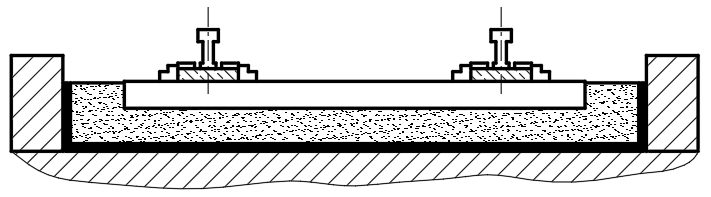
Рисунок 8.1 - Схема виброизоляции № 1
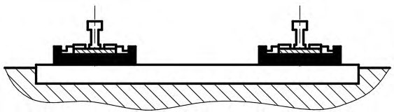
а б
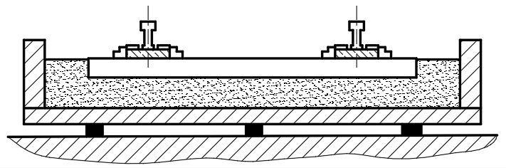
а - сплошная раскладка вибродемпфирующих матов; б - точечная (разреженная) укладка вибродемпфирующих матов
Рисунок 8.2 - Схема виброизоляции № 2
8.2Требования к материалам и изделиям
Не допускается использование в качестве вибродемпфирующих материалов для схем по 8.1.5 резиновых или эластомерных материалов с остаточной деформацией сжатия более 10 % при испытаниях по ГОСТ 18268, ГОСТ 11722.
8.3Расчетное обоснование динамических характеристик системы виброизоляции здания
- а) значения вертикальных и горизонтальных статических нагрузок на виброизолятор (по схеме № 1 - рисунок 8.1) или давлений по подошве фундаментной плиты (по схеме № 2 - рисунок 8.2, а , б ) от нормативных и расчетных сочетаний усилий;
- б) требуемая эффективность системы виброизоляции с учетом старения материала на срок службы системы;
- в) результаты инженерно-геологических изысканий с определением физико-механических параметров грунтов по 5.1.10;
- г) особые условия применения системы виброизоляции (уровень грунтовых вод и их агрессивность, предполагаемые габаритные размеры системы виброизоляции, возможные места установки виброизоляторов и т. д.).
где k - динамическая жесткость виброизолятора на рассматриваемой частоте, кН/мм; m - колеблющаяся масса сооружения, кг.
Для детального анализа эффективности системы виброизоляции, рекомендуется рассматривать динамическую жесткость на доминирующей частоте спектра воздействия, а также на резонансной частоте системы виброизоляции.
После подбора системы виброизоляции следует проверить ее эффективность с учетом спектра входного воздействия по формулам раздела 5.
8.4Правила проектирования системы виброизоляции здания
- а) общее описание системы виброизоляции;
- б) конструктивные мероприятия, связанные с требованием повышенной пространственной жесткости здания;
- в) проект технологии монтажа, включая подготовку конструкции, монтаж, контроль качества монтажа и проверку эффективности разработанной системы виброизоляции;
- г) определение требуемой динамической жесткости системы виброизоляции в вертикальном и горизонтальных направлениях, исходя из прочности ее элементов и требуемой эффективности системы;
- д) расчет элементов системы виброизоляции (виброизоляторов и иных вибродемпфирующих материалов) с учетом старения и длительной эксплуатации на действие нормативных и расчетных сочетаний усилий;
- е) расчет собственных частот свободных колебаний и амплитуд, возбуждаемых ветром, вынужденных колебаний здания;
- ж) проект организации службы контроля за качеством монтажа и эксплуатации системы виброизоляции.
При расположении виброизоляторов в теле колонны допускается увеличение ее поперечного сечения путем устройства капители. Капитель и тело колонны должны быть рассчитаны на восприятие местных нагрузок в местах установки виброизоляторов. При расположении в капители более одного виброизолятора, необходимо учитывать возможное возникновение эксцентриситета нагрузки за счет неравномерного нагружения виброизоляторов или их жесткости.
Устройство системы виброизоляции по вертикальной стене подземной части здания осуществляется за счет приклеивания или прижима материалов к конструкции стены. При этом должна быть обеспечена адгезия материалов к стене в течение срока службы системы.
1) число и размер виброизоляторов (для системы по схеме № 1 рисунок 8.1), толщину и марку вибродемпфирующих материалов (для системы по схеме № 2);
2) значения напряжений виброизоляторов в процессе монтажа;
- 3) осадки виброизоляторов под нагрузкой при монтаже и в эксплуатационный период (для системы по схеме № 1 - рисунок 8.1), дополнительную осадку фундамента за эксплуатационный период работы сооружения (для системы по схеме № 2 - рисунок 8.2, а , б );
- 4) эффективность системы виброизоляции в нормируемом диапазоне частот. 3. 8.4.10 Проектировщику (конструктору) сооружения на этапе расчета сооружения необходимо дополнительно учитывать изменение жесткости основания и выполнять перерасчет здания с учетом увеличивающейся осадки. 4. 8.4.11 При проектировании системы виброизоляции здания следует учитывать изменение амплитуд горизонтальных колебаний при ветровых воздействиях и выполнять их проверку на соответствие СП 20.13330. 5. 8.4.12 При проектировании системы виброизоляции, а также ее монтаже, вводе в эксплуатацию, работе, ремонте должны соблюдаться требования механической безопасности сооружения. 6. 8.4.13 Экспертиза проектной документации на систему виброизоляции должна проводиться компетентными организациями, обладающими опытом выполнения аналогичных работ и подтвержденными результатами оценки эффективности выполненной системы.
АПриложение А. Физико-механические свойства грунтов
Таблица А.1 Значения упругих, массовых и диссипативных параметров различных грунтов [5]
| Наименование грунта | Плотность , кг/м³ | Скорость распростра- нения продольных упругих волн c l , м/с | Скорость распростра- нения поперечных упругих волн c t , м/с | Коэффициент потерь |
|---|---|---|---|---|
| Насыпной грунт, уплотненный со степенью влажности G <0,5 | 1600 | 300 | 100 | 0,1 |
| Песок крупный и средней крупности со степенью влажности G <0,8 | 1700 | 500 | 150 | 0,1 |
| Суглинок тугопластичный и плотно-пластичный | 1700 | 600 | 250 | 0,15 |
| Глина твердая и полутвердая | 1700 | 1500 | 350 | 0,15 |
| Лесс, лессовидный суглинок при показателе просадочности П = 0,17 | 1500 | 400 | 150 | 0,15-0,2 |
| Грунт при относительном содержании растительных остатков q > 0,6, торф | 1000 | 200 | 80 | 0,2 |
| Илы супесчаные, глинистые | 1500-1800 | 1100 | 300 | 0,2 |
| Водонасыщенный грунт ниже уровня грунтовых вод при степени влажности G > 0,9 | 2000 | 1750 | 250 | 0,1 |
| Насыпные рыхлые пески, супеси, суглинки и другие неводонасыщенные грунты | 1400-1700 | 100-300 | 70-150 | 0,1-0,2 |
| Гравелисто-песчаные | 1600-1900 | 200-500 | 100-250 | 0,1 |
| Песчаные маловлажные | 1400-1700 | 150-900 | 130-500 | 0,05-0,1 |
| Песчаные средней влажности | 1600-1900 | 250-1300 | 160-600 | 0,05-0,1 |
| Песчаные водонасыщенные | 1700-2200 | 300-1600 | 200-800 | 0,05-0,1 |
| Супеси | 1600-2000 | 300-1200 | 120-600 | 0,1-0,15 |
| Суглинки | 1600-2100 | 300-1400 | 140-700 | 0,15-0,2 |
| Глинистые влажные, пластичные | 1700-2200 | 500-2800 | 130-200 | 0,2 |
| Глинистые плотные, полутвердые | 1900-2600 | 2000-3500 | 1100-2000 | 0,15 |
| Лесс и лессовидные грунты | 1300-1600 | 380-400 | 130-140 | 0,15 |
| Полускальные и скальные породы | Полускальные и скальные породы | Полускальные и скальные породы | Полускальные и скальные породы | Полускальные и скальные породы |
| Мергель | 1800-2600 | 1400-3500 | 800-2000 | 0,05-0,1 |
| Песчаник рыхлый | 1800-2200 | 1500-2500 | 800-1700 | 0,1 |
| Песчаник плотный | 2000-2600 | 2000-4300 | 1100-2500 | 0,05-0,1 |
| Песчаник сильновыветренный | 1700-2200 | 1000-3000 | 600-1800 | 0,1 |
| Известняк прочный | 2000-3000 | 3000-6500 | 1500-3700 | 0,05 |
| Глинистые сланцы | 2000-2800 | 2000-5000 | 1200-3000 | 0,05-0,1 |
| Изверженные и метаморфические породы (гранит, гнейс, базальт, диабаз и пр.) трещиноватые | 2400-3000 | 3000-5000 | 1700-3000 | 0,05-0,1 |
|---|---|---|---|---|
| Изверженные и метаморфические породы (гранит, гнейс, базальт, диабаз и пр.) нетрещиноватые | 2700-3300 | 4000-6500 | 2700-4300 | 0,03-0,05 |
БПриложение Б. Измерение вибрации от железнодорожных линий
Б.1Общие положения
Б.1.1 Измеряемые параметры вибрации в соответствии с настоящим сводом правил:
- эквивалентное vw, экв , максимальное vw, макс корректированные среднеквадратичные значения виброскорости, м/с;
- эквивалентные v экв ,i , максимальное v макс ,i среднеквадратичные значения виброскорости, м/с, в октавных полосах со среднегеометрическими частотами 4-250 Гц.
Функции частотной коррекции для вертикального и горизонтального направлений принимают по таблице 4.4.
Б.1.2 Контролю вибрации от движения поездов должно предшествовать определение фоновой вибрации. Если сигнал, регистрируемый при прохождении поезда, не выделяется над уровнем фона, оценку вибрации от движения поездов в соответствии с настоящим сводом правилом выполнять не следует.
Б.1.3 Измерительная цепь должна быть откалибрована. Динамический диапазон датчиков измерений и анализаторов должен быть достаточен для измерения как фоновых значений, так и максимальных значений, возникающих при прохождении поездов всех категорий (таблица 4.1).
Б.1.4 Необходимо учитывать расширенную неопределенность измерений по ГОСТ 34100.1, ГОСТ 34100.3.
Б.1.5 Для измерений вибрации при движении поездов категории 2 (таблица 4.1) рекомендуется пользоваться велосиметрами. Для измерения вибрации при движении поездов категории 1 и 4 (таблица 4.1) -акселерометрами (с последующим интегрированием для получения сигнала скорости). Измерение вибрации остальных категорий поездов допускается проводить с применением любого из указанных вибропреобразователей.
Б.1.6 Оборудование для проведения измерений должно соответствовать ГОСТ Р 53963.1, ГОСТ ИСО 8041, применяемые для обработки фильтры - ГОСТ 17168. Применяемое оборудование должно быть внесено в реестр средств измерений и иметь действующие свидетельства о поверке.
Б.1.7 Для измерения корректированного значения виброскорости следует применять средства измерений, обеспечивающие частотную коррекцию в вертикальном и горизонтальном направлениях для общей вибрации в соответствии с 4.2.4.
Б.2Расположение датчиков относительно железнодорожного пути
Б.2.1 В зависимости от длины сооружения выбирают створы измерений вдоль железнодорожного пути.
При длине сооружения (длине фасадной части, выходящей на путь, или проекции габаритов здания на ось пути) до 50 м включительно выбирается два створа для измерений - в начале и в конце здания - рисунок Б.1, а .
При длине сооружения свыше 50 м - выбирается целое число створов измерений, по одному в начале и в конце здания и далее через каждые (25±5) м между крайними створами - рисунок Б.1, б .
Если напротив сооружения расположен стык рельса в железнодорожном пути, стрелочный перевод, переезд или иной характерный участок пути, то один из створов следует сместить в место расположения этого характерного участка.
Рисунок Б.1 - Створы измерения вибрации при длине здания до 50 м ( а ) и свыше 50 м ( б )
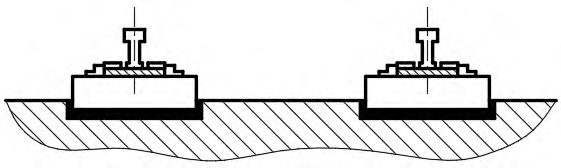
Б.2.2 В каждом измерительном створе измерения проводят синхронно минимум в трех точках: в одной точке на расстоянии: 8 м, 16 м, 32 м, 64 м и 128 м от оси ближайшего к проектируемому зданию железнодорожного пути и двух точках на абрисе фундамента проектируемого здания.
При этом между исследуемым зданием и линией железной дороги должно быть не менее двух точек измерений (первая точка на расстоянии 8 м от оси железнодорожного пути, вторая точка - в месте установки проектируемого здания). Расстояние между самой дальней точкой измерений и линией железной дороги должно быть не более расстояния от оси железной дороги до самой удаленной точки исследуемого сооружения.
Рекомендуется проводить измерения в характерных местах сооружения (углы, выступающие элементы и т. д). Рекомендуемые точки измерений приведены на рисунке Б.2.
Рисунок Б.2 - Рекомендуемые точки измерений в месте расположения здания
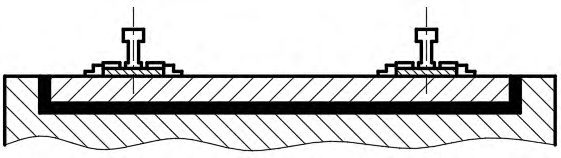
Примечание - Измерения в створе желательно проводить на достаточном удалении от массивных тел, которые могут исказить результаты измерений. В соответствии с ГОСТ 53964, рекомендуется, чтобы расстояние от точки измерений до массивного тела более чем в полтора раза превышало его максимальный габаритный размер. Если массивное тело или слой грунта со значительно отличающимися динамическими свойствами находится на пути распространения вибрации к точке измерений, то возможные эффекты дифракции и отражения колебательных волн в грунте могут привести к понижению вибрации в этой точке. И, наоборот, в точку измерений может прийти колебательная волна, отразившаяся от находящихся в стороне фундаментов зданий или канализационных колодцев, что приведет к повышению вибрации в этой точке.
Б.2.3 Рекомендации по проведению измерений в выемках, на насыпях и плоском участке представлены на рисунке Б.3. Рекомендуется проводить измерения в первой точке на расстоянии 8 м от оси железнодорожного пути. В случае отсутствия такой возможности, допускается смещать первую точку измерений на расстояние 16, 32 или 64 м с обязательным измерением в дополнительной точке, расположенной на равном расстоянии между первой точкой измерений и точкой измерений вблизи здания (но не ближе 5 м). а б
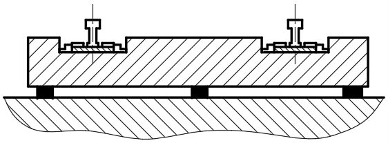
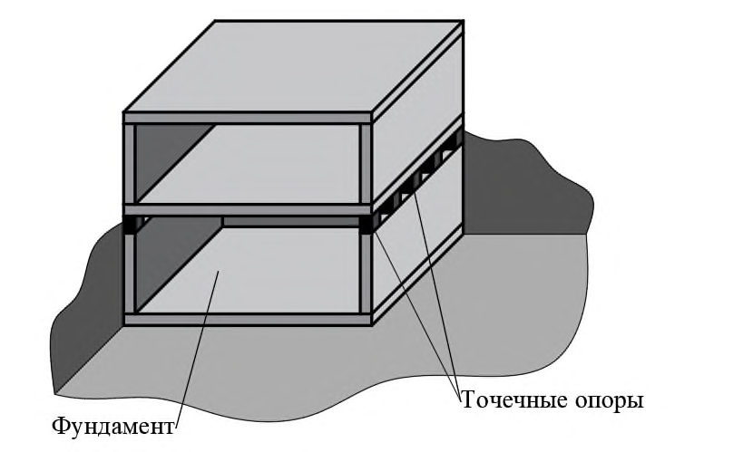
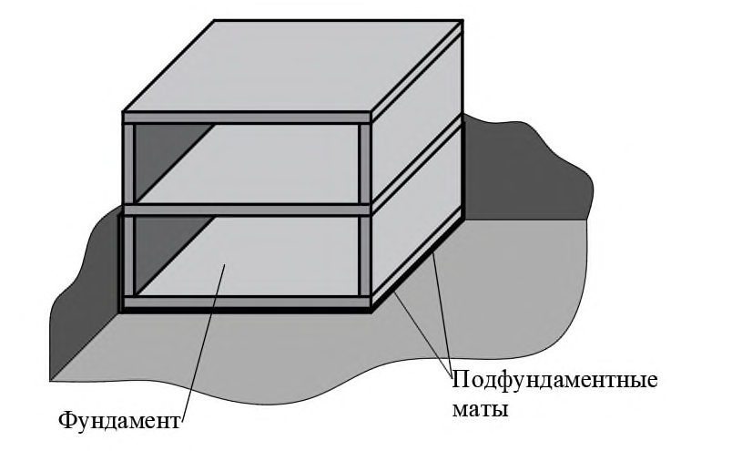
а - путь на насыпи; б - путь в выемке; в - путь на плоском участке
Рисунок Б.3 - Точки для измерения вибрации в створе
- Б.2.4 Вибропреобразователь должен быть прикреплен с помощью резьбового соединения к поверхности промежуточной платформы или стального диска по ГОСТ 31319, ГОСТ 53964. Для ориентации однокомпонентных преобразователей в разных направлениях допускается применять кубик из легкого сплава по ГОСТ 53964.
- Б.2.5 При установке датчиков на грунт следует пользоваться положениями ГОСТ Р 52892 и ГОСТ 53964. При этом площадка установки должна быть расчищена от строительного мусора, грязи и прочих посторонних предметов. Датчики следует устанавливать непосредственно на поверхность грунта с применением схем крепления по ГОСТ 53964.
Установка датчиков на поверхность грунта, покрытую асфальтобетонным покрытием, бетонными плитами не допускается.
- Б.2.6 Измерения следует проводить синхронно в трех взаимно перпендикулярных направлениях: вертикальном (ось Z ) и двух горизонтальных (ось Х - перпендикулярно, ось Y - параллельно линии железной дороги). Отклонение оси чувствительности датчика от заданного направления измерений не должно быть более 5°.
- Б.2.7 Установочный резонанс датчика должен находиться на частоте выше 1000 Гц, чтобы не оказывать влияния на результаты измерений.
Допускается проводить измерения датчиком с установочным резонансом ниже 2 Гц, при проверке несовпадения резонансной частоты датчика и частоты внешнего воздействия.
- Б.2.8 При измерении вибрации от тоннеля [6] следует руководствоваться положениями ГОСТ 31185.
- Б.2.9 Для уменьшения кабельного эффекта присоединяемый к вибропреобразователю кабель должен быть эластично прикреплен к неподвижным точкам через промежутки не более 1,5 м.
- Б.2.10 При проведении измерений на приборе должна быть установлена временная характеристика «медленно» (τ = 1 с).
Б.3Методика проведения измерений
- Б.3.1 Перед началом измерений необходимо получить проектную информацию по конструкции ВСП на рассматриваемом участке, а также типам подвижного состава, предусмотренным для оборота на этом участке линии.
Б.3.2 При проведении измерений необходимо фиксировать следующие параметры подвижного состава:
- тип состава с ориентировочным значением нагрузки на ось, числом и типом вагонов;
- ходовые качества подвижного состава;
- скорость подвижного состава (измеряемую по секундомеру с учетом длины подвижного состава);
- значение необрессоренных масс подвижного состава (тип тележки).
- Б.3.3 При подготовке протокола измерений необходимо также отметить следующие параметры ВСП:
- шероховатость поверхности катания рельса (посредством визуального контроля или, при наличии технической возможности, инструментально);
- тип рельсового пути со следующими данными: профиль рельса (по ГОСТ Р 51685), геометрия пути, например, подуклонка, радиус кривой, уклон пути, ширина колеи, колея, маркировка стрелочного перевода, тип железнодорожного переезда и т. д.;
- конструкция ВСП (балласт/безбалласт, эстакада, мост, тоннель и т.п.), поперечник ВСП, характеристика используемых в конструкции ВСП материалов;
- при наличии систем виброизоляции ВСП - тип, производитель, поперечник и динамические характеристики виброзащитных элементов ВСП.
- Б.3.4 При измерении эквивалентных значений виброскорости должно пройти не менее 5 n поездов, в числе которых не менее пяти поездов каждой категории. Множитель n соответствует числу категорий поездов, проходящих по рассматриваемому участку железнодорожной линии. Если необходимо, измерения могут быть продолжены на следующий день.
При измерении максимальных значений виброскорости должно пройти не менее 20 поездов каждой категории поездов, проходящих по рассматриваемому участку железнодорожной линии. Если невозможно получить необходимое число записей, то в протоколе испытаний указывают число прошедших поездов, вибрация которых измерена, и приводят оценку влияния числа поездов на неопределенность измерений.
Б.3.5 Эквивалентные и максимальные значения корректированных и спектральных параметров вибрации регистрируют в направления трех осей X, Y, Z при прохождении каждого поезда. Продолжительность измерения равна интервалу, при котором суммарный сигнал (от поезда плюс фоновая вибрация) более чем в два раза превышает значение фоновой вибрации.
Если применяемое средство измерений не позволяет регистрировать корректированные параметры вибрации, измеряют спектральные значения и значения корректированных параметров рассчитывают по формулам 4.2.4.
Б.3.6 До и после проведения измерений следует выполнять калибровку средств измерений в соответствии с инструкциями по их эксплуатации. Если результаты калибровки различаются более, чем в 1,4 раза (3 дБ), измерения вибрации следует повторить.
Б.4Обработка результатов измерений
Б.4.1 Если суммарное измеренное значение виброскорости v сум (соответствующее совместному действию сигнала от прохождения поезда и фонового сигнала) превышает значение виброскорости от фоновой вибрации v ф в 3,5 раза ( v сум > 3,5 vф ), влияние фоновой вибрации можно не учитывать. При выполнении неравенства 2 v ф < v сум 3,5 v ф влияние фоновой вибрации учитывают по формуле
Б.4.2 По результатам измерений эквивалентных значений виброскорости рассчитывают часовое эквивалентное корректированное 𝑣𝑤,экв,1h,𝑙,𝑖 и спектральные 𝑣экв,1h,𝑙,𝑖,𝑓 ( f -номер соответствующей спектральной полосы) значения виброскорости потока поездов i -й категории, прошедших по рассматриваемому участку пути в течение l -го часа, по формуле
где - эквивалентное корректированное или спектральное значения виброскорости (с учетом влияния фоновой вибрации), измеренное при прохождении jго поезда iй категории по рассматриваемому участку пути в течение lго 𝑣экв,𝑙,𝑖,𝑗 𝑣𝑤,экв,𝑙,𝑖,𝑗 𝑣экв,𝑙,𝑖,𝑗,𝑓 часа, м/с; 𝑛𝑙,𝑖 -число поездов i -й категории, проходящих по рассматриваемому участку пути в течение l -го часа; t l,I,j -время измерения виброскорости jго поезда iй категории, прошедшего по рассматриваемому участку пути в течение lго часа, с.
Часовое эквивалентное корректированное и спектральные значения виброскорости потока поездов всех категорий, прошедших по рассматриваемому участку пути в течение l -го часа, вычисляют по формуле
где 𝑛𝑙 -число категорий поездов, прошедших по рассматриваемому участку пути в течение l -го часа.
Эквивалентный уровень звука за время оценки (16 ч днем и 8 ч ночью) вычисляют по формуле
где 𝑇𝑘 -время оценки, ч, принимаемое в соответствии с санитарными требованиями равным 16 ч ( 𝑛𝑘 = 16) для дня и 8 ч ( 𝑛𝑘 = 8) -для ночи и рабочего места; t i
= 1 ч.
Б.4.3 По результатам измерений максимальных значений виброскорости рассчитывают среднее максимальное корректированное 𝑣̅ 𝑤,макс,𝑖 и спектральные значения 𝑣̅ макс,𝑖,𝑓 ( f номер соответствующей спектральной полосы) виброскорости потока поездов i -й категории, прошедших по рассматриваемому участку пути за время измерений, по формуле
где 𝑣макс,𝑖,𝑗 -корректированное 𝑣𝑤,макс,𝑖,𝑗 или спектральное 𝑣макс,𝑖,𝑗,𝑓 максимальное значение виброскорости (с учетом влияния фоновой вибрации), измеренное при прохождении jго поезда iй категории по рассматриваемому участку пути за время измерений, м/с; 𝑛𝑖 -число поездов i -й категории, прошедших по рассматриваемому участку пути за время измерений.
За максимальное значение виброскорости за время оценки принимают наибольшее из значений 𝑣̅ макс,𝑖
Б.5Представление результатов измерений
- Б.5.1 Результаты измерений оформляют протоколом, который должен содержать следующие сведения:
- организация, проводившая измерения;
- участок железной дороги, поезда, проходящие по которой -источники оцениваемой вибрации;
- схема и описание места проведения измерений;
- дата и время проведения измерений;
- средства измерений (прибор, тип, заводской номер, сведения о госповерке);
- результаты измерений корректированных и спектральных 𝑣экв,𝑙,𝑖,𝑗,𝑓 виброскоростей для фоновой и суммарной вибраций при прохождении поездов измеренных категорий по рассматриваемому участку пути
(осциллограмма, если снималась, число 𝑛𝑙 категорий поездов, прошедших в течение каждого l -го часа, число 𝑛𝑙,𝑖 поездов i -й категории, прошедших в течение каждого l -го часа, с указанием времени t l,I,j их прохождения, таблица эквивалентных 𝑣𝑤,экв,ф и максимальных 𝑣𝑤,макс,ф корректированных и спектральных 𝑣экв,ф,𝑓 , 𝑣макс,ф,𝑓 виброскоростей для фоновой вибрации, эквивалентных 𝑣𝑤,экв,𝑙,𝑖,𝑗 и максимальных 𝑣𝑤,макс,𝑙,𝑖,𝑗 корректированных и спектральных 𝑣экв,𝑙,𝑖,𝑗,𝑓 , 𝑣макс𝑙,𝑖,𝑗,𝑓 виброскоростей при прохождении jго поезда iй категории по рассматриваемому участку пути в течение lго часа);
- время оценки (день, ночь);
- результаты обработки эквивалентных ( 𝑣экв,1h,𝑙,𝑖 , 𝑣экв,1h,𝑙 и 𝑣экв,𝑘 ) и максимальных ( 𝑣макс,𝑖,𝑗 , 𝑣̅ макс,𝑖 , 𝑣макс,𝑘 ) корректированных и спектральных значений виброскорости;
- подписи лиц, проводивших измерения и оценку вибрационного воздействия.
ВПриложение В. Значения виброскорости для опорного расстояния 16 м
Таблица В.1 Значения виброскорости v 0, для опорного расстояния r 0 = 16 м
| Категория поезда | f сг , Гц | Виброскорость v 0 10 -4 , м/с, в направлении оси | Виброскорость v 0 10 -4 , м/с, в направлении оси | Виброскорость v 0 10 -4 , м/с, в направлении оси | Виброскорость v 0 10 -4 , м/с, в направлении оси | Виброскорость v 0 10 -4 , м/с, в направлении оси | Виброскорость v 0 10 -4 , м/с, в направлении оси |
|---|---|---|---|---|---|---|---|
| Категория поезда | f сг , Гц | X | X | Y | Y | Z | Z |
| Категория поезда | f сг , Гц | экв | макс | экв | макс | экв | макс |
| 16 | 1,14 | 1,18 | 0,41 | 3,18 | 0,52 | 3,76 | |
| 31,5 | 0,71 | 2,36 | 0,32 | 0,61 | 0,30 | 0,54 | |
| 63 | 0,30 | 0,84 | 0,28 | 0,55 | 0,08 | 0,17 | |
| 4 | 4,64 | 18,31 | 4,51 | 9,32 | 5,17 | 8,74 | |
| 8 | 2,40 | 5,97 | 2,52 | 5,77 | 2,26 | 5,22 | |
| 16 | 1,58 | 16,59 | 1,99 | 18,85 | 1,63 | 18,54 | |
| 31,5 | 1,03 | 3,59 | 1,12 | 3,97 | 1,20 | 4,65 | |
| 63 | 0,43 | 1,57 | 0,42 | 1,31 | 0,57 | 1,97 | |
| 4 | 2,21 | 6,17 | 2,31 | 4,79 | 1,80 | 4,57 | |
| 8 | 1,33 | 2,78 | 1,57 | 3,33 | 1,33 | 2,88 | |
| 16 | 0,76 | 6,84 | 0,96 | 8,80 | 0,77 | 7,11 | |
| 31,5 | 0,62 | 1,87 | 0,67 | 2,60 | 0,80 | 2,58 | |
| 63 | 0,24 | 0,74 | 0,34 | 0,84 | 0,21 | 0,53 | |
| 4 | 0,37 | 0,99 | 0,78 | 1,60 | 0,65 | 1,22 | |
| 8 | 0,99 | 1,22 | 1,00 | 1,21 | 0,34 | 0,60 | |
| 16 | 0,36 | 1,02 | 0,30 | 0,86 | 0,36 | 1,24 | |
| 31,5 | 0,22 | 0,51 | 0,20 | 0,51 | 0,28 | 0,78 | |
| 63 | 0,06 | 0,14 | 0,05 | 0,40 | 0,07 | 0,45 |
Примечания - Значения виброскорости, приведенные в таблице, получены для участка пути с обращением подвижных составов категорий 1-4 по таблице 4.1. Они определены по малой выборке результатов измерений для пяти (для электропоездов - трех) поездов и соответствуют верхней границе результатов измерений для одностороннего интервала охвата с уровнем доверия 95 %.
ГПриложение Г. Влияние вибрации на осадки здания
Таблица Г.1 Влияние вибраций на осадки зданий
| Ускорение колебаний поверхности грунта около фундаментов, см/с 2 | Характеристика динамических осадок фундамента | Характеристика динамических осадок фундамента |
|---|---|---|
| Ускорение колебаний поверхности грунта около фундаментов, см/с 2 | в водонасыщенных заиленных песках, текучепластичных глинах и других слабых грунтах | в песках (кроме указанных) и пластичных глинистых грунтах |
| До 5 | Незначительные затухающие осадки | Осадок нет |
| От 5 до 15 | Затухающие осадки (2-3 мм/год) | Весьма незначительные незатухающие или слабо затухающие осадки (1-2 мм/год) |
| От 15 до 30 | Незатухающие осадки (3-5 мм/год) | Незатухающие осадки (2-3 мм/год) |
| От 30 до 50 | Значительные незатухающие осадки (более 5 мм/год) | Незатухающие осадки (3-5 мм/год) |
Библиография
- [1] Приказ Минтранса России от 21 декабря 2010 года № 286 «Об утверждении Правил технической эксплуатации железных дорог Российской Федерации»
- [2] Руководство по комплексной оценке состояния участка пути (километра) на основе данных средств диагностики и генеральных осмотров пути. Утверждено распоряжением ОАО «РЖД» от 14 декабря 2009 г. № 2536р
- [3] Распоряжение ОАО «РЖД» от 18 декабря 2012 г. № 2607р «Об утверждении и введении в действие «Инструкции по применению конструкции верхнего строения пути в тоннелях»
- [4] Распоряжение ОАО «РЖД» от 22 декабря 2017 г. № 2706р «Об утверждении Методики оценки воздействия подвижного состава на путь по условиям обеспечения надежности»
- [5] ВСН 211-91 Прогнозирование уровней вибрации грунта от движения поездов метрополитена и расчет виброзащитных строительных устройств
- [6] СП 23-105-2004 Оценка вибрации при проектировании, строительстве и эксплуатации объектов метрополитена .